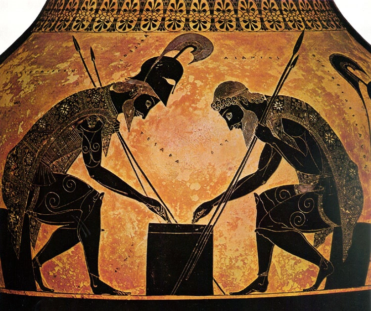

Chronicle
The Timeline Game
Create Online Game
Join Online Game
Or play locally to test:
players
Play Locally
Enter Game Code
Join
Game Lobby
----
Share this code with friends
Copy Link
Players
Waiting for players...
Start Game
Leave Lobby
Leave
Waiting...
Loading...
????
Game Over!
Play Again
Back to Menu
Tap anywhere to close
▲
Your Mistakes
0
Close
Correct!
1969
Player 1
Scoreboard
v5.8